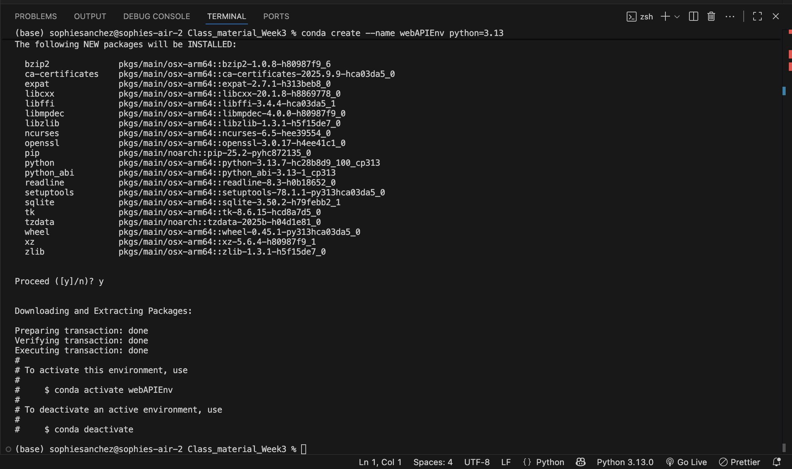
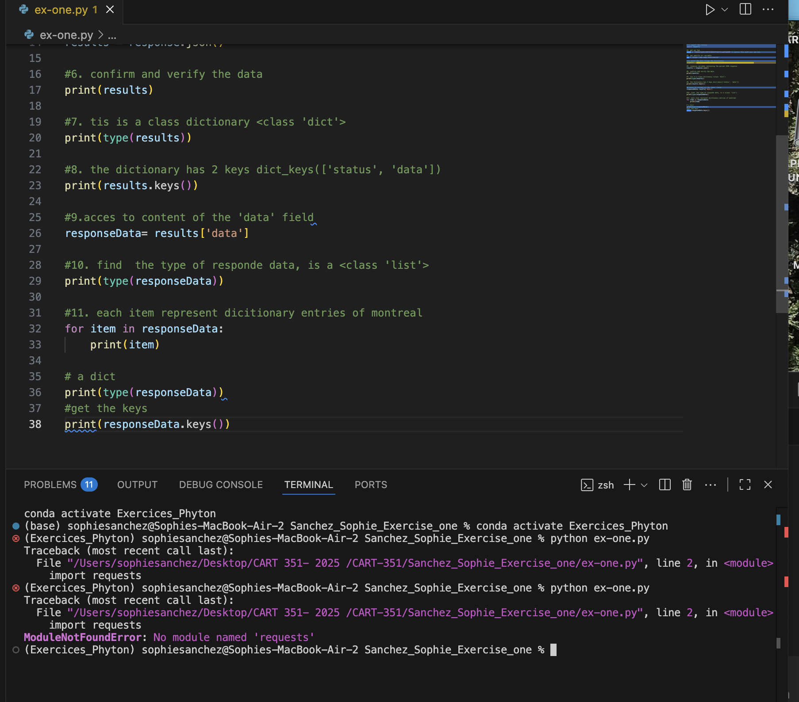

Week 1 - September 8, 2025
Started on the course outline and the presentation of the different projects for the rest of the semester. Also
I am taking all the assignments that I will need to submit from here to the end of the semester. I will need to do a list
of everything with the dates.
Week 2 - September 15, 2025
In this class we learned how to setup Python in our terminal. It was a useful class
to get a better understanding of the basic steps before writing any code in Python.
Important things to know when setting the environment in Python
- Get the miniConda for Python
- Open the file and open terminal: new terminal
- python3 hello_cart351.py
- Then if we want to create the virtual environment, on the terminal: conda create --name filenamehere python=3.13
- Activate the environment: conda activate filenamehere
- Then if using a package manager: pip install request


Week 3 - September 29, 2025
This class was divided into two parts: Flask Part 1 and Flask Part 2, in which
I learned that Flask is a production environment that helps the user to build web applications
in a simpler way because it creates APIs, handles forms, user logins, and databases.
Learning the first part of Flask was very easy to understand. I think it is a good
tool because it is not over complicated and follows the same structure each time. It
is my first time experimenting with it and I think I feel more comfortable working in
this type of environment. I feel comfortable using this structure for future projects.
Important things that I noticed using Flask
Very important to have the right setup working:
- Always setup environment and pip install flask on the terminal (see image)
- Defining a route: the route will be the HTML file by @app.route("/x"), def x(): then app.run()
- Into the python.main: importing flask app (see images)
- The templates folder is important to keep all files organized (HTML)
- Jinja is used to pass variables from main.py to the HTML using {{}}
As updating this journal, i went only to search other resources that will help me to build the
website, i was looking ways to improve the layout and appeareance of my page journal as sematic elements.

Week 4 - October 20, 2025
In this week we continue learning the Flask, in this module we continue working
with templates with jinja, this way all the html files share the same templates
Important information of using the jinja templates
- Always setup environment and pip install flask on the terminal (see image)
- Jinja uses {% extend "base.html" %} and {% extend block %}
- Also uses {% block content %} and {% endfor %}, this is use to put the content inside
on the html file for the child templates of the main html file.
- Also we need to link this new html page to the html itself with this format
href="{{url_for('addPlantData')}}">Add Plant
Week 5 - October 27, 2025
In this week we continue learning the Flask, this module was really interesting, i learn a lot of how to
have different sessions from the user, SAlso we did implement js to fetch for the access the data. Also we learn about the ways to
get data from the user using the Post and GET method
Important information that i learned
- This week material was really interesting since i have now a better understanding on what is needed to get the flask application
and the user storage of information working together. This material helped me to have a better understanding on the things that i am able to do in
the future using the storage of information.
Week 6 - November 3, 2025
In this week we continue learning the Flask, this module allowed me to work with the reading of the text and how and in wich way they will be displayed
and also to write the information to get update and stored. Also in this class we combine the Json communication a way to transform a dictionary to a Json
object. this remain me at the beggining of the first classes that we used dictionaries to get the information.
Important information that i learned
- Even though Sabine make this class very easy to understand i wasn't understanding the part where
js entered as a new information, i was lost on how the information will be communicated into each one of
the files.
Week 7 - November 10, 2025
Flask AND mongoDB yeiii, so this was my first time using this cloud service to store my own information into a database,
i was really happy and glad that i was learning this, i really enjoy learning how to store the information and connect everything
together. Even though i was having some issues creating the name and the password, i was feeling confortable because i got Sabine's
help to resolve this issue.
This is a good opportunity for later projects
- Is important to learnd that i need to import this command to set my .env file where my password,user and the name of the folder will
appear, Also to have the from dotenv import load_dotenv and install on my terminal the pip install python-dotenv. This class
was really interesting to learn and experience how to storage the information not in our folders files
but in our own database.
Week 8 - November 17, 2025
FLASK and Websockets, this was the last class and to finish the semester we learned how to using this new
technology to have a communication between the client and the server and receive the responses in real time
interesting tool that can be use in the feature
- this introduction to this technology was important since even if i am not doing any project right
now on this for the feature is is a interesting implementation if i want to use it on game or in a type of narrative
Also because the setting is easy to understand.
I really enjoyed This semester, i learned a lot and the most important part is that i was able to challenge myself
doing projects, This class was very interesting and i think that is important as a future programmer to have this knowledge.
I feel more confortable now using Python, something i didn't know i will be able to use. But this course structure
and the constant help from Sabine make it easier and fun to learn.